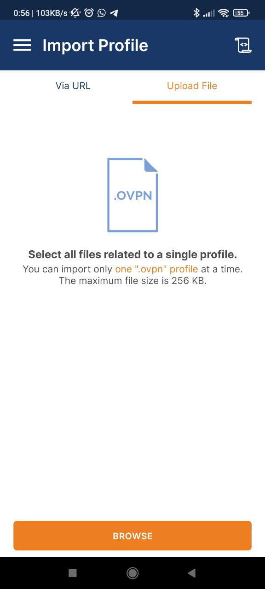

Passo 1: Salva il file choskoVPN.ovpn sul tuo smartphone
Prima di tutto, assicurati di avere il file choskoVPN.ovpn sul tuo smartphone. Assicurati di salvarlo in una posizione facilmente accessibile.

Passo 2: Scarica l'app client OpenVPN
Per iniziare, scarica l'app client OpenVPN sul tuo smartphone. Puoi trovarla su Google Play Store per Android o su App Store per iOS.
Passo 3 (da fare solo la prima volta): Importa la configurazione VPN sul tuo smartphone
Apri l'app OpenVPN sul tuo smartphone e Seleziona la tab "File" (o "Upload File" in alcune versioni).
Fai clic su "Browse" e seleziona il file .ovpn che hai salvato precedentemente sul tuo smartphone.
Nella pagina "Imported Profile", seleziona la casella "Save Private Key Password" e incolla la password fornita.
Fai clic su "Connect" per avviare la connessione VPN.
Passo 3 (da fare le volte successive): Connettiti alla VPN
Una volta importata correttamente la configurazione VPN, connettiti alla VPN tramite l'app OpenVPN sul tuo smartphone.
Passo 5: Abilita l'hotspot Wi-Fi sul tuo smartphone
Abilita l'hotspot Wi-Fi del tuo smartphone.
Esempio su Android (a seconda della versione e della marca potrebbe essere leggermente diverso):
Esempio su iOS:
Passo 6: Collega il televisore alla rete Wi-Fi del tuo smartphone
Sul televisore, apri le impostazioni Wi-Fi e connettiti alla rete Wi-Fi del tuo smartphone.
Passo 7: Apri Netflix e guarda qualcosa.
Ora puoi aprire Netflix, assicurarti che funzioni e iniziare a guardare un video. Consiglio di fare una prova breve.
Avvertenze
Ricorda che questa operazione va eseguita almeno una volta al mese e verranno utilizzati i dati della tua offerta attiva sul cellulare.